python由来
Python的创始人为荷兰人吉多·范罗苏姆（Guido van Rossum），是一名计算机程序员。
1989年圣诞节期间，在阿姆斯特丹，Guido为了打发圣诞节的无趣，决心开发一个新的脚本解释程序，作为ABC语言的一种继承。
他设计Python的目的是为了创造一种简单易学、可读性强的语言，旨在提供一种更好的替代方案。Python的名字来自英国喜剧团体Monty Python，这是一个受到 Guido van Rossum 的喜欢的喜剧团体。

python是什么
1 | Python是一种面向对象的解释型高级编程语言， |
python的职业规划
python发展趋势
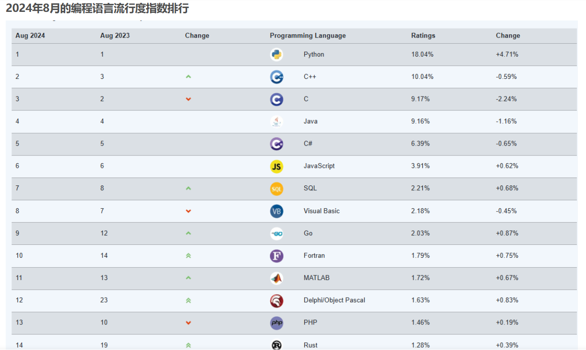
python能做什么
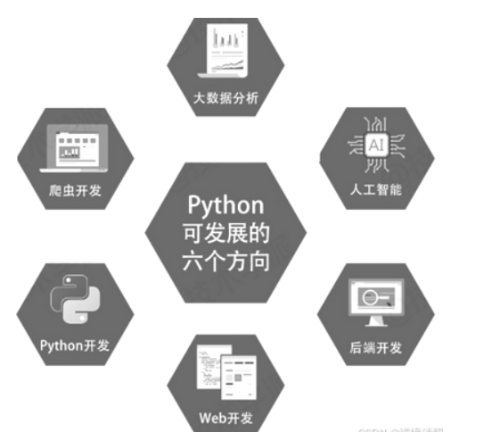
web开发
Python是Web开发领域的一大利器。借助Django、Flask等框架，开发者可以高效地构建安全、可扩展的Web应用。无论是个人博客、企业官网还是复杂的电商平台，Python都能轻松应对。
例如：豆瓣、知乎
优势：功能强大、开发效率高、安全性
网络爬虫
Python还是构建网络爬虫的理想语言（网络爬虫是一种数据采集工具，利用计算机程序在互联网上爬取数据并且从中解析提取出有价值的信息）
为什么要开发网络爬虫？
-
搜索引擎，搜索引擎的核心是通过爬虫
-
大数据时代需要通过爬虫来采取海量数据进行分析
-
人工智能学习训练过程也要基于海量数据
数据分析与科学计算
-
处理大批数据的时候python效率非常高
-
Pyhton可以很简单的实现办公自动化
-
python可以用来做算法模型
自动化运维和测试
Python在自动化运维领域也发挥着重要作用
自动化运维：将所有的运维工作都是用自动化的方式来实现的
常用方式：使用工具和脚本
自动化测试：
通过工具记录或编写脚本的方式模拟手工测试的过程，再通过回放或运行脚本来执行测试用例，从而代替人工对系统的功能进行验证
人工智能
Python是人工智能和机器学习领域的热门语言。
涉及领域：数据挖掘、图像识别与处理、自然语言识别
两种学习：机器学习、深度学习
游戏开发
虽然Python不是游戏开发的主流语言，但它仍然可以用于开发一些轻量级或教育类的游戏。Pygame等库提供了图形渲染、声音播放和游戏逻辑处理等功能，使得开发者能够用Python快速开发出有趣的游戏。
桌面应用开发
Python还支持桌面应用的开发。借助Tkinter、PyQt等GUI库，开发者可以创建跨平台的桌面应用程序，满足用户的各种需求。
嵌入式系统开发
近年来，Python在嵌入式系统开发领域也逐渐崭露头角。MicroPython等项目使得Python能够在资源受限的嵌入式设备上运行，为物联网和智能硬件的开发提供了新的选择。
为什么学python
-
国家重视，政策好
-
它是线下主流语言
-
人才缺口大
python发展前景
-
人工智能与大数据
-
物联网与智能家居
-
各种自动化如无人驾驶
认识python
Python语言是一种面向对象的解释型语言
解释型语言：使用专门的解释器对源程序逐行解释成特定平台的机器码并立即执行。是代码在执行时才被解释器一行行动态翻译和执行，而不是在执行之前就完成翻译。
编译型语言：使用专门的编译器，针对特定的平台，将高级语言源代码一次性的编译成可被该平台硬件执行的机器码，并包装成该平台所能识别的可执行性程序的格式。
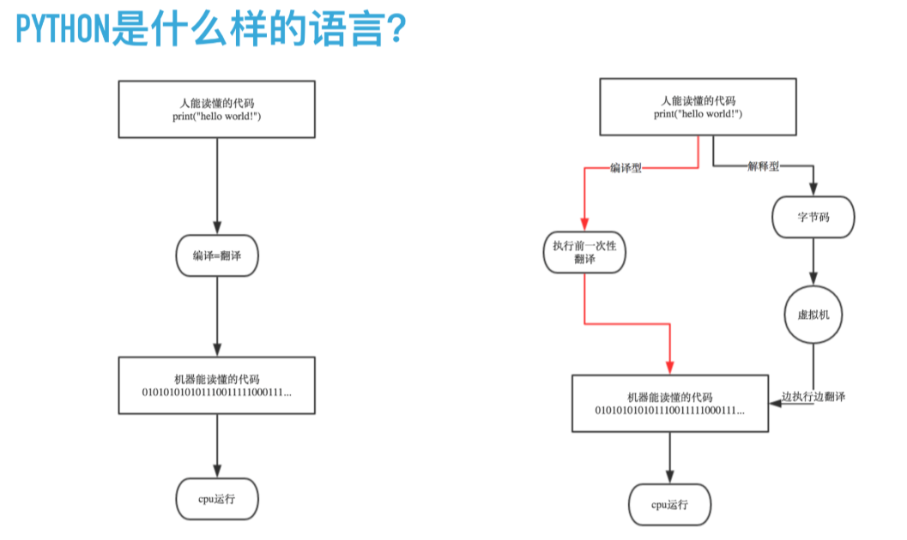
编译型语言 vs 解释型语言
-
编译型：编译后就可以在平台运行，解释型：在运行期间才转换
-
一般来说，编译型语言运行速度快。
-
解释型语言跨平台特性比编译型语言好。
python开发环境安装
首先从python官网 对应版本。直接点Downloads按钮即可进入下载页面，不用点下面的子选项。
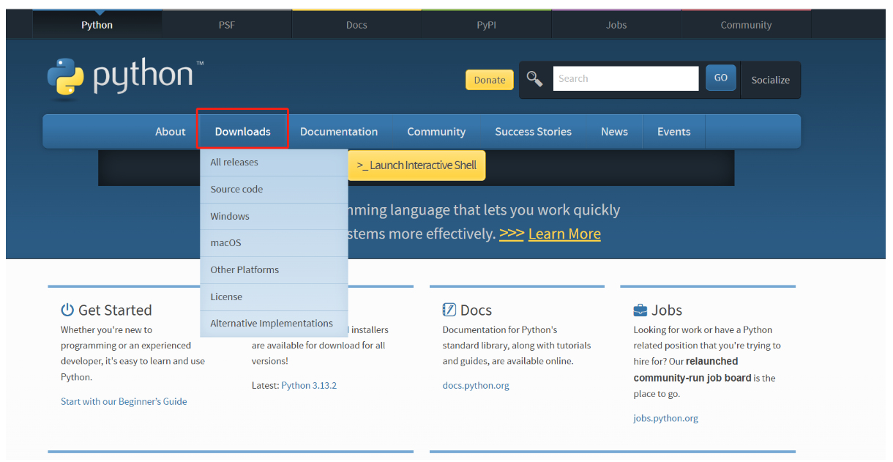
进入下载页面后可以看到最新的版本（比如现在是3.13.2版本），推荐使用最新版本。
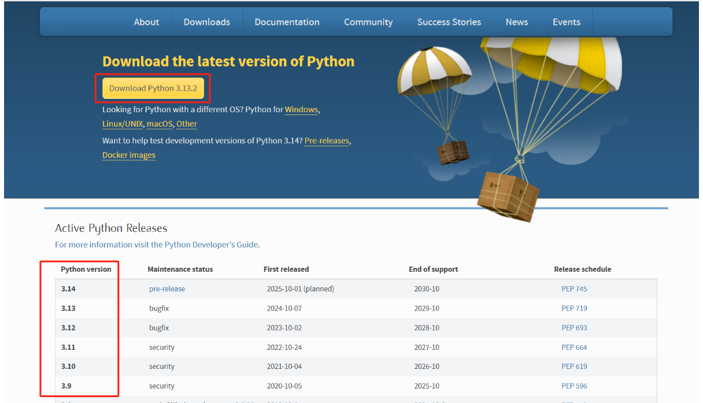
如果想使用其他的某个版本，页面往下拉，在下方的表格也可以找到（注：如果是Windows 7最好下载python 3.8.x及以下的版本，因为它少了东西，更高的版本它不能很好的支持）。点击“Download”即可下载。
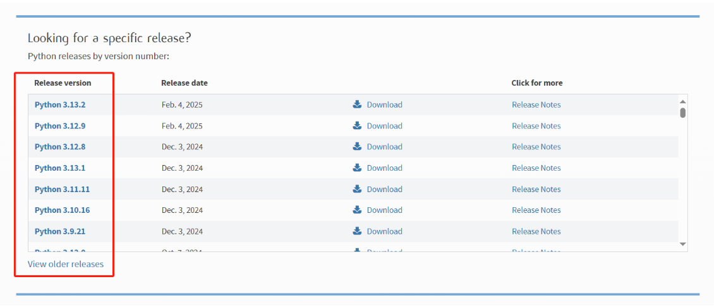
点击"Download"后会跳转到一个下载页面，页面往下拉，选择适合自己系统的版本进行下载。如果是Windows，下载"Windows installer"的安装包；没有在列表中的其他操作系统需要下载源代码（Gzipped source tarball / XZ compressed source tarball）自己编译创建 python 环境。
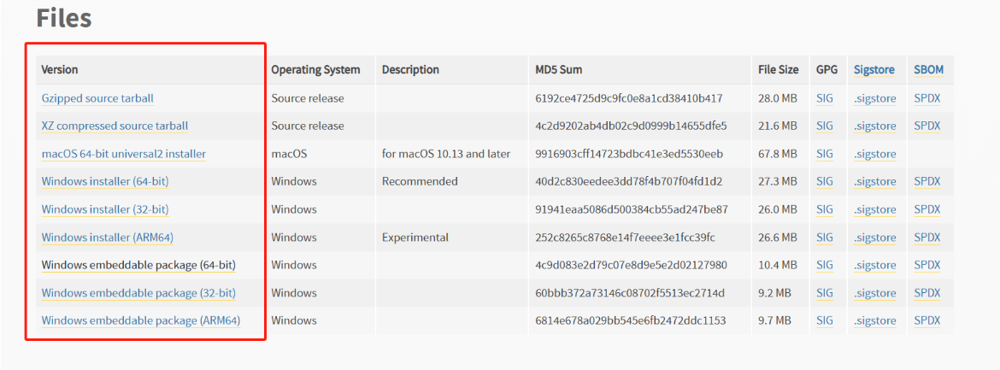
下载完成之后就可以开始安装了。每个版本的安装过程基本是一样的，这里以 3.13.2 版本为例。运行安装包（Windows直接点击安装包），可以看到如下的界面，需要注意的是：一定要勾选“Add python.exe to PATH”。因为如果不勾选这个，python就没有被放到系统环境变量中，就无法通过命令行提示符里使用python解析器。另外，不要点“Install Now”，这个安装方式使用的全是默认设置，作为专业的开发者，要选择自定义安装（“Customize installation”）。
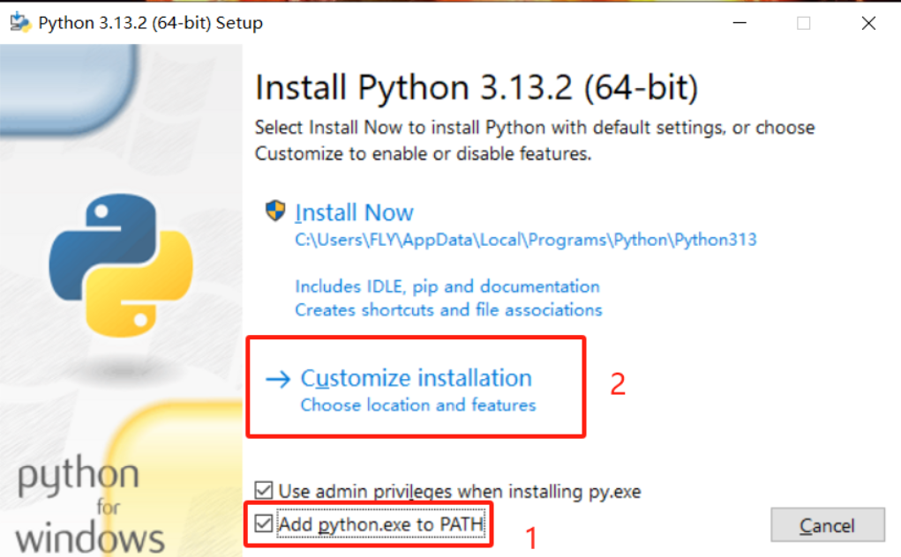
进入自定义安装后得到如下界面，其他的选项够不够选无所谓，但是第二个选项 “pip” 一定要勾上；因为这是python的包管理工具，将来要安装一些三方的工具或库，都要依赖于这个包管理工具。所以这个工具一定要勾选，不然后面好多事情都干不了。勾选后点击 “Next” 按钮进入下一步。
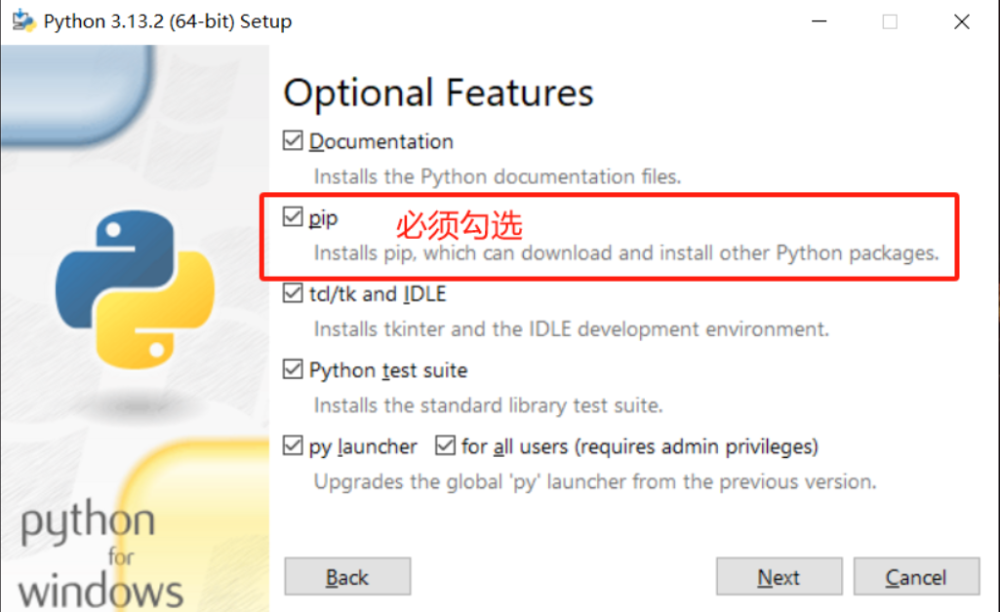
然后进入如下的界面，这个界面的其他选项都不用勾选，只需要勾选 “Add Python to environment variables”。这个也是将 python 加到环境变量中，但跟前面的也有一些区别。另外，需要修改安装路径，因为默认的安装路径太深了，我们可以改的浅一点；但也不能放在根目录，必要要创建一个文件夹来存放 python 的环境数据。而且，路径不能有空格、中文（非英文都不允许）、特殊字符，如果有这些字符，后面将会带来无从无尽的麻烦，切记切记。
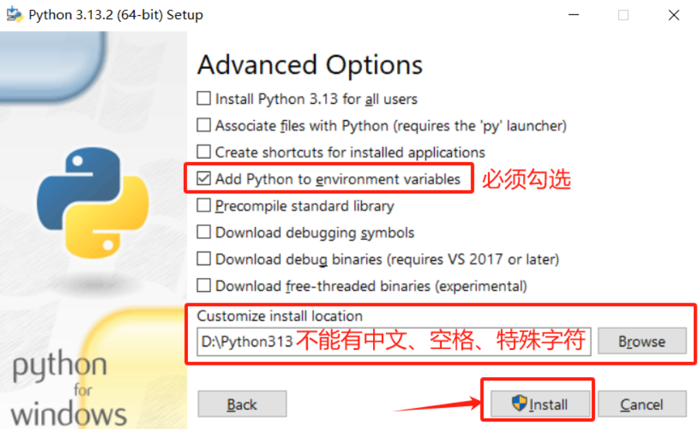
点击**“Install”**后就开始安装了，这个过程可能需要几分钟，耐心等一下。
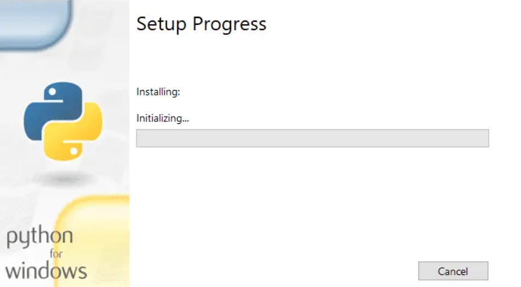
安装完成后，不要着急点击**“cancel"按钮，先点击"Disable path length limit”**。一定要点击关闭最长路径深度限制，否则将来安装第三方库时可能会报错，到时候该注册表就非常麻烦了。
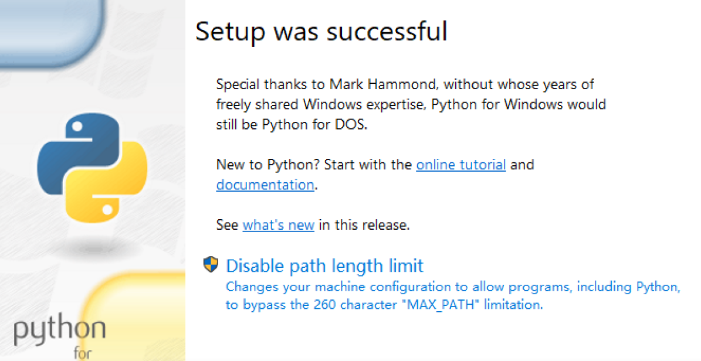
安装完成后，需要验证是否安装成功。按 “win + r” 输入cmd，进入命令行界面。在命令行界面输入python 或者 python --version，有正确提示则代表安装成功。
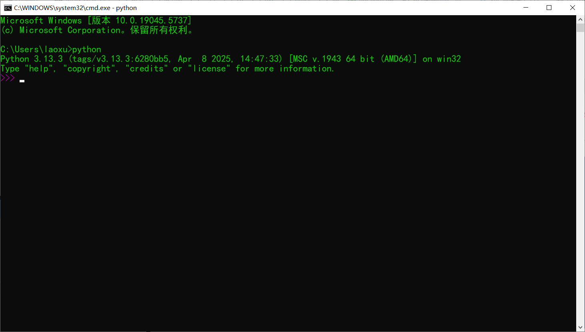
pycharm工具安装
pycharm下载&安装：https://zhuanlan.zhihu.com/p/25785268886
pycharm破解工具&激活码：https://ziby0nwxdov.feishu.cn/wiki/OyLBwBd9oiVFTykXrHvcEB91nyb
python初体验
需求：打印出" 对于每一门你不知道的新语言，都要先说一句：hello world "
思考：
- 在哪儿写？
- 写什么？
- 如何运行查看结果？
解答：4种方式
- cmd输入python进入交互模式

- 创建txt文档，修改后缀名为py，cmd命令运行
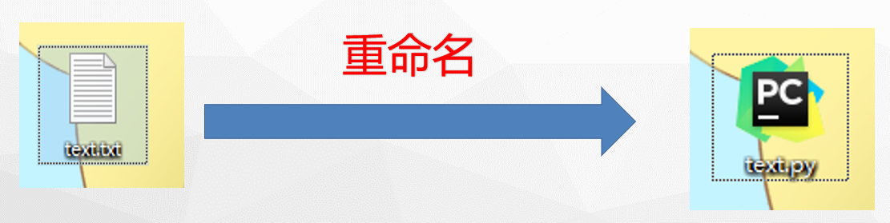
- 使用python自带的IDLE
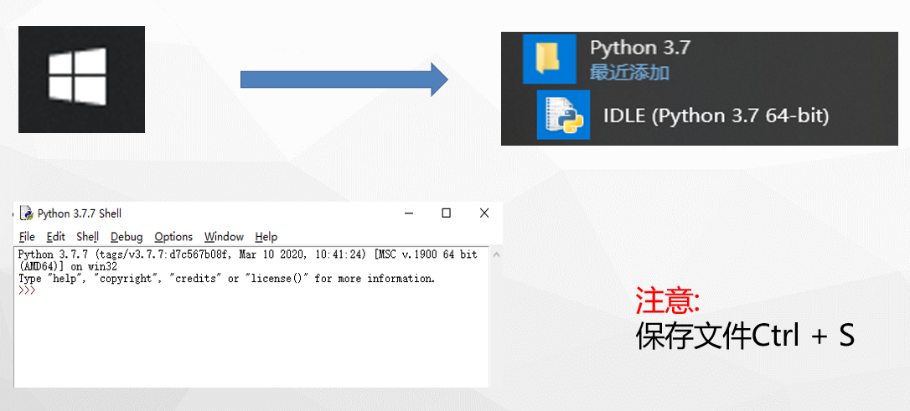
- 打开pycharm，右击新建一个python file
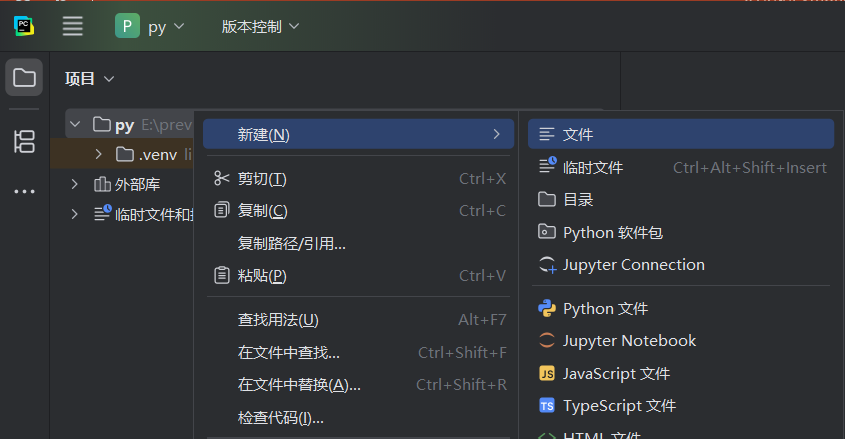
注释
语法：注释符号 + 注释代码
单行注释：# + 注释代码 => 快捷键：ctrl + /
多行注释：‘’’ +注释代码+ ‘’’
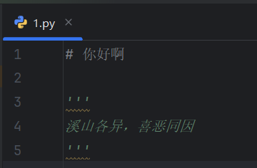
BUG
什么是bug？
程序错误，即英文的Bug，也称为缺陷、臭虫，是指在软件运行中因为程序本身有错误而造成的功能不正常、死机、数据丢失、非正常中断等现象。 早期的计算机由于体积非常庞大，有些小虫子可能会钻入机器内部，造成计算机工作失灵。史上的第一只 Bug ，真的是因为一只飞蛾意外走入一电脑而引致故障，因此Bug从原意为臭虫引申为程序错误。
我们需要具备：
-
识别BUG的能力 多看
-
分析BUG的能力 多思考
-
解决BUG的能力 多尝试、查询资料、记录
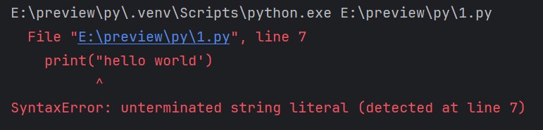
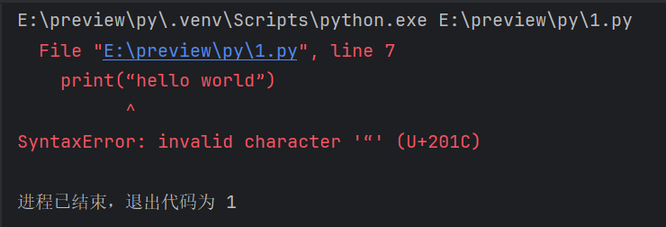
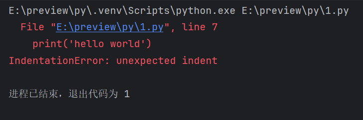
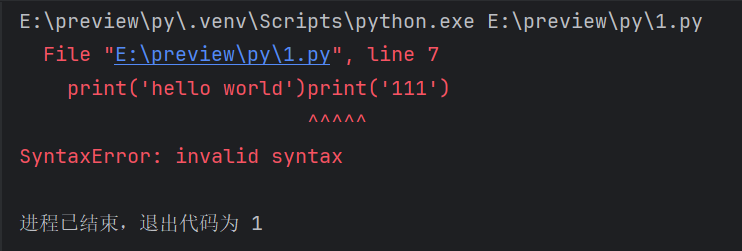
DEBUG
排除程序故障叫DEBUG
Debug是一种调试工具
通过断点调试的方式进行追踪
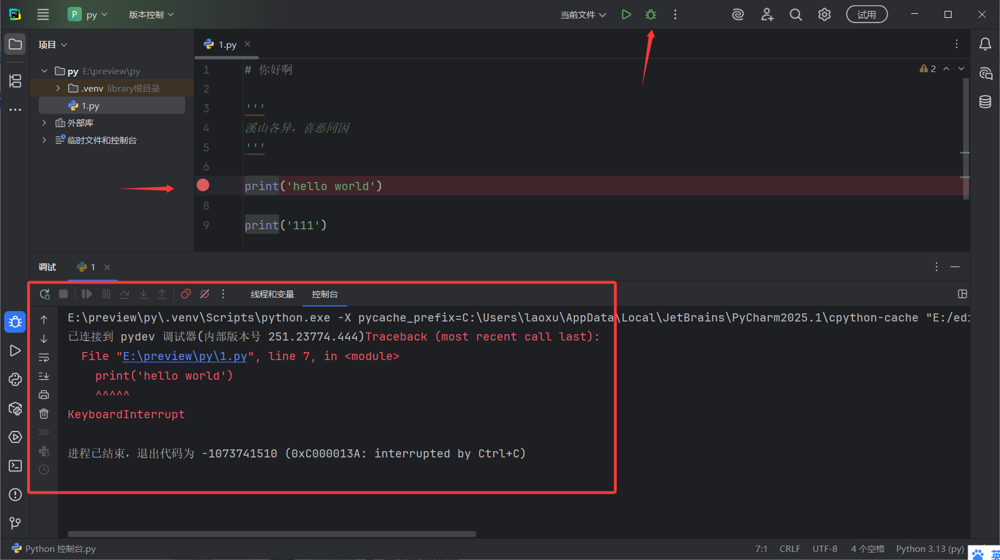
输入输出
-
输出print()
-
输入input()